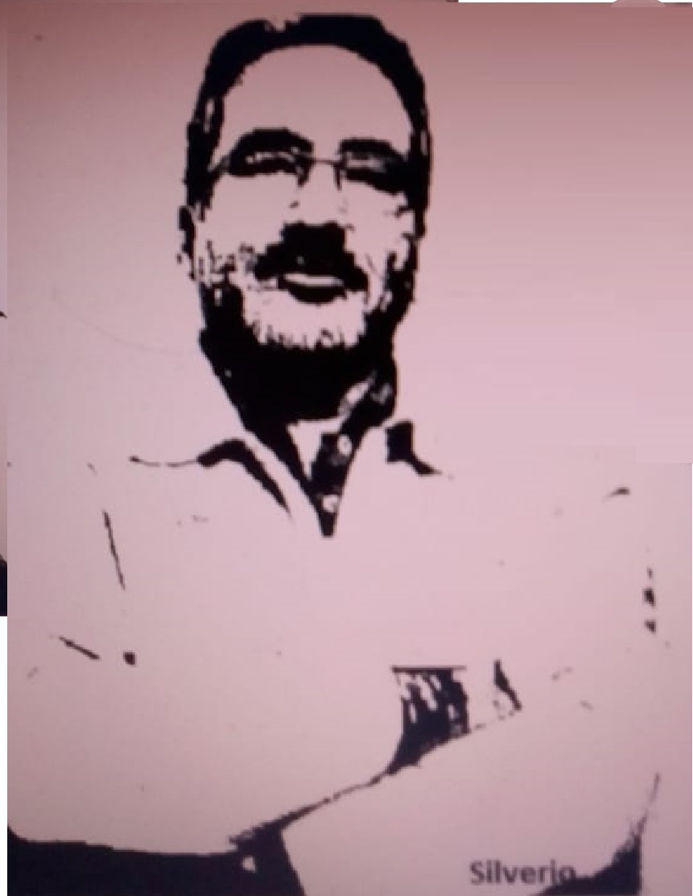

Ivan Silverio

Bicho do Paraná, de cidade com nome bonito, Nova Esperança-PR. Graduado em Teologia pela STL (Seminário Teológica de Londrina) e em Letras pela Unicentro (Universidade Estadual do Centro Oeste). Especializado em Literatura. Pastor Presbiteriano, professor de Língua Portuguesa, poeta e escrevedor. “Um dia, quem sabe, por virtude de tanto imaginar, transbordarei e virarei poesia”.